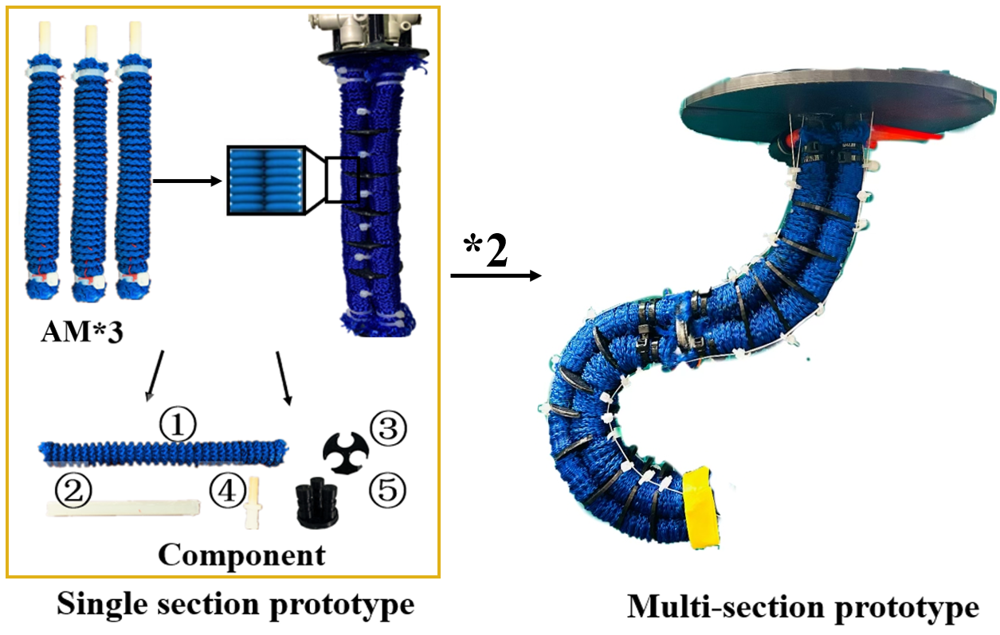
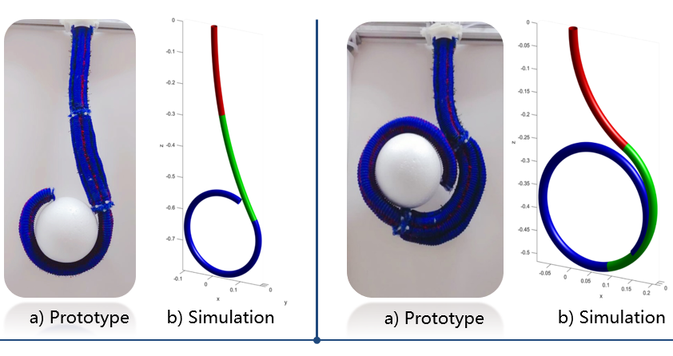
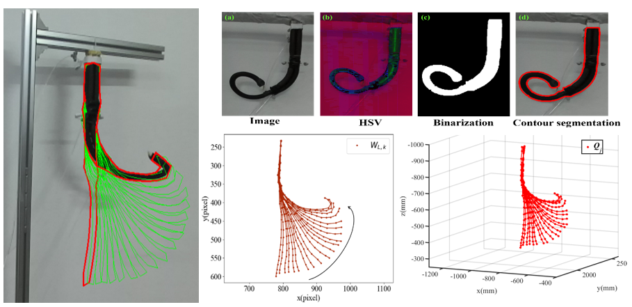
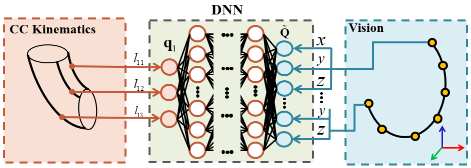
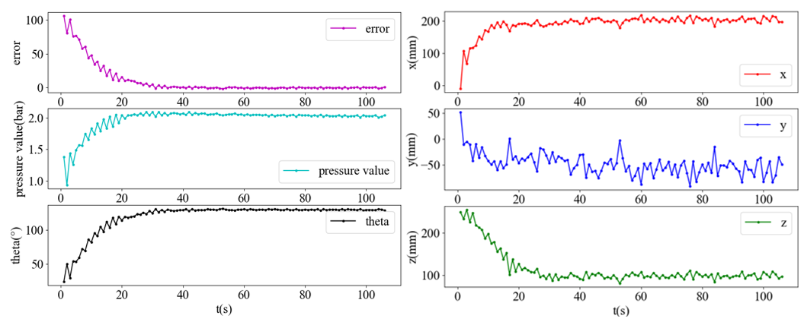

|
Shuangquan Zou (Joshua)
|
|
Ph.D candidate,
Dept. of Control Science and Engineering，Harbin Institute of Technology,
No.92 West Dazhi Street,Harbin City,China，
E-mail: a0020924@126.com
Tel:(+86)18845610716
|
Biography
Shuangquan Zou received a B.S. degree from Shenyang Jianzhu University in 2018 and was recommended to Harbin Institute of Technology for a M.S. degree. Then he received his M.S. degree in 2020. From September 2020 to present, he is currently a Ph.D candidate majoring in Control Science and Engineering within Harbin Institute of Technology under the supervision from Prof. Guangfu Ma.He has been in the National University of Singapore as the visiting PhD from February 2023 to August 2024. His research interests include the design and manufacture of soft manipulator, kinematic modeling, shape estimation, intelligent control algorithm and obstacle avoidance.
For detailed CV, please click [here]
Main Awards
National Scholarship（bachelor, 2016)
National Scholarship（master, 2019）
China Telecom Scholarship（bachelor, 2018)
China Scholarship Council(CSC) (Ph.D candidate，2023.2-2024.8)
Provincial Government Scholarship（bachelor, 2015)
Mayor Scholarship（bachelor, 2017)
CAI 613 Institute Scholarship（Ph.D candidate, 2022)
Presidential Scholarship*2（bachelor, 2016, 2017)
The First Prize Scholarship*8 (bachelor, master)
Academic Excellence Scholarship*7 (bachelor, 2014-2018)
Outstanding Graduates Awards (bachelor, 2018)
Outstanding Graduates Awards (master, 2020)
Engineering Fund (Ph.D candidate，2020-2024)
Research
My research focuses on the soft manipulator, mainly including:
International Publications
Zou S, Zhang H*, Lyu Y, et al. MPC-based position control of multi-segment soft manipulator considering obstacle avoidance [J]//IEEE/ASME Transactions on Mechatronics.(Under review,SCI,Q1)
Zou S, Lyu Y, Zhang H, et al. MPC-based trajectory tracking control for multi-segment pneumatic soft manipulator considering hysteresis characteristics [J]//IEEE Robotics and Automation Letters.(Under review,SCI,Q1)
Zou S, Lyu Y*, Qi J, et al. A deep neural network approach for accurate 3D shape estimation of soft manipulator with vision correction [J]//SENSORS AND ACTUATORS A-PHYSICAL, 2022:113692.(SCI,Q1)[pdf]
Zou S, Lyu Y*, Guan Q, et al. A real-time 3D centerline estimation framework for multi-section soft manipulator based on stereo vision [J]//Control Engineering and Applied Informatics,2022,24(2):46-56.(SCI,Q4) [pdf]
Zou S, Lyu Y*, Qin T, et al. An MPC-based Pose Control Framework of Multi-Section Soft Manipulator using Hybrid Jacobian Estimation[C]//2023 IEEE 19th International Conference on Automation Science and Engineering (CASE). IEEE, 2023: 1-6, Auckland, New Zealand. (EI)[pdf]
Zou S, Lyu Y*, Man Y, et al. Design and implement of shape detection for the soft manipulator[C]//2020 39th Chinese Control Conference (CCC). IEEE, 2020: 3972-3977.(EI)[pdf]
Lyu Y*, Zou S, Meng F, et al. A shape detection system and method for soft manipulator [P] CN109955234b, 2021-06-15.(China Invention Patent)[pdf]
Note: * indicates the corresponding author.
Chinese Publications
邹双全, 吕跃勇*, 管清华，刘立武，马广富. 基于SOM算法的软体机械臂三维形状实时感知 [J]//哈尔滨工业大学学报.(EI，已录用)
Zou S, Lyu Y*, Guan Q, et al. Real-time 3D shape recognition for soft manipulator based on SOM algorithm [J]//Journal of Harbin Institute of Technology.(EI, Accepted)
Research Contents
Design and manufacture of the prototype |
 |
In this work, a pressure-actuated soft manipulator for the multi-section is designed and fabricated. The component unit of the prototype is the artificial muscle (AM), made by covering the surface of the rubber tube with the nylon mesh.Each AM has an individual chamber as the pressure control channel, which can extend up to 200% and withstand 0 to 350 kPa pressure range. Three identical AMs are symmetrically and parallelly distributed in each section, connected circumferentially to drive the prototype collaboratively. Besides, the rigid frame are evenly placed along the centerline to well fix the relative positions of the three AMs, effectively preventing the prototype from 3D torsion. The gaps between PMAs are tightly fixed by the braided thread to ensure the prototype’s shape is as close as possible to the feature of constant curvature. The prototype can bend in any direction by applying different pressures to each AM.
In addition, all connectors and rigid frame are made by 3D printing. The annular groove on the surface of the pneumatic connector prevents rubber tube from falling off under big pressure, and the outside is tightly sealed with the help of the nylon ties to further ensure air tightness.
Some skills:
|
3D shape estimation based on piecewise constant curvature kinematics |
 |
In this work, cable encoders are selected as the sensor to measure the muscle length. By designing a program for orthogonal decoding and serial communication of SMT32, the length information is transmitted to the computer.Under the assumption of piecewise constant curvature (PCC), the kinematics model for multi-section is proposed using muscle length, which obtains the 3D shape of the whole manipulator. Finally,the experiment results agree well with the simulation results in real time, so the reasonability of the shape detection system is verified.
Some skills:
Keil(C)
Serial communication
MATLAB
|
Real-time 3D shape reconstruction using machine vision |
 |
In this work, a real-time 3D shape reconstruction framework based on stereo vision is proposed for the multi-section soft manipulator. The contour of the manipulator is segmented accurately from the real-time images captured by the ZED camera using the machine vision method. The contour data is then clustered based on the self-organizing mapping (SOM) algorithm to form a 2D centerline. The linear overdetermined equation established by the camera projection model is figured out to obtain the optimal solution in the sense of least squares, and the 3D reconstruction is completed. In the simulation of the SOM algorithm, the parameters selection, simulation verification, and the comparison of various machine learning algorithms for centerline extraction are completed. The results show that the SOM algorithm has more advantages to solve this work. Real-time bending experiments are carried out to verify the feasibility and robustness of the proposed framework, and performance evaluation experiments are also performed for accuracy and real-time performance. Compared with other research work, the framework in this work has high accuracy and real-time tracking performance.
Some skills:
Machine vision
Machine learning
Pychram(Python)
OpenCV
|
A deep neural network approach for accurate 3D shape estimation of soft manipulator with vision correction |
 |
In this work, firstly, the constant curvature (CC) kinematics is verified to only roughly estimate the 3D shape of the soft manipulator via experiment, because this method becomes inaccurate when the manipulator is bent with large deformation.Solving singularities is also a trouble. Secondly, a vision-based high-precision shape estimation method has strict requirements for the environment and prone to self occlusion easily. Therefore, a learning approach based on a deep neural network (DNN) is designed to correct the CC kinematics with accurate visual estimation results. Finally, the performance of the trained DNN is evaluated on the test set and a real-time bending deformation experiment. The results indicate that the DNN approach has high accuracy and stability ability to learn the entire 3D shape of the soft manipulator in real time.
Some skills:
|
Design and closed-loop experimental verification of a single-variable control algorithm for the bending angle of the soft manipulator |
 |
In thiks work, the control algorithm is designed for the single air pressure control variable of the single section soft manipulator. The end position of the prototype is obtained in real time by visual sensing, and the bending angle is calculated by using the inverse kinematics model. Finally, the prototype is controlled to bend to the desired angle. The design of the control algorithm includes PID control and model-free adaptive control (MFAC), and the feasibility of the method is verified by closed-loop experiments.
The next research work, I want to focus on multivariate control to the desired spatial shape or end position and end trajectory planning.
Some skills:
|
Activities
Teaching Assistant, Harbin Institute of Technology, 09.2018-01.2019 Teaching Assistant, Harbin Institute of Technology, 09.2021-01.2022
|